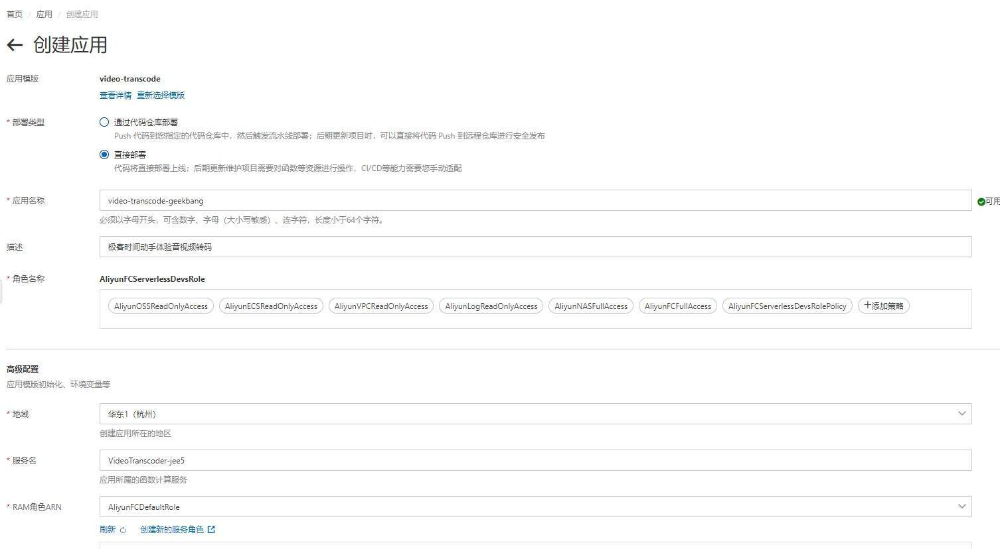
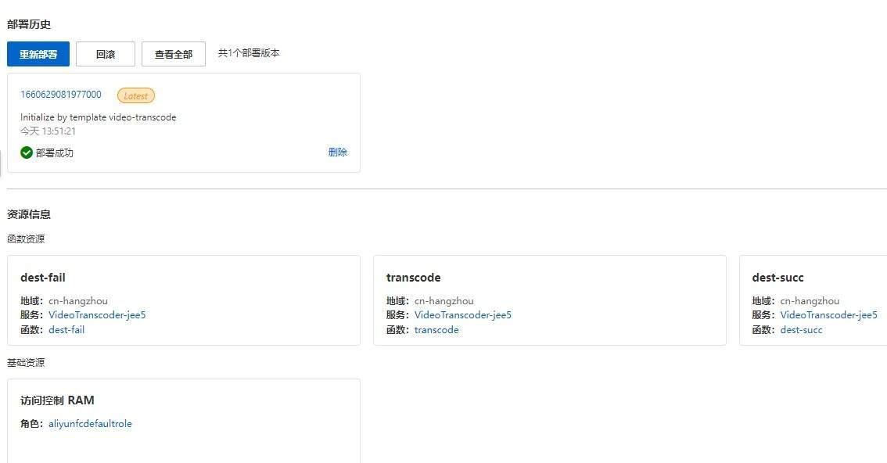
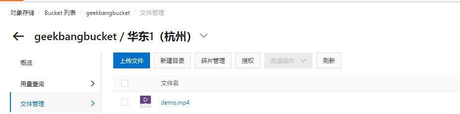
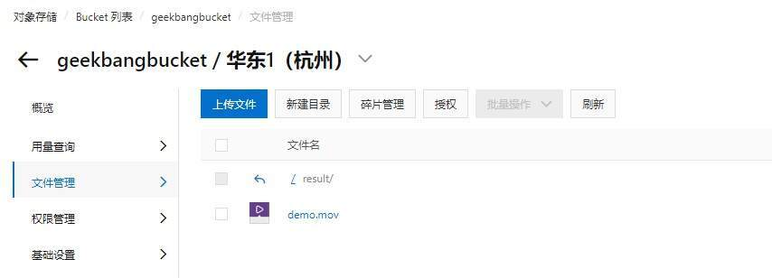
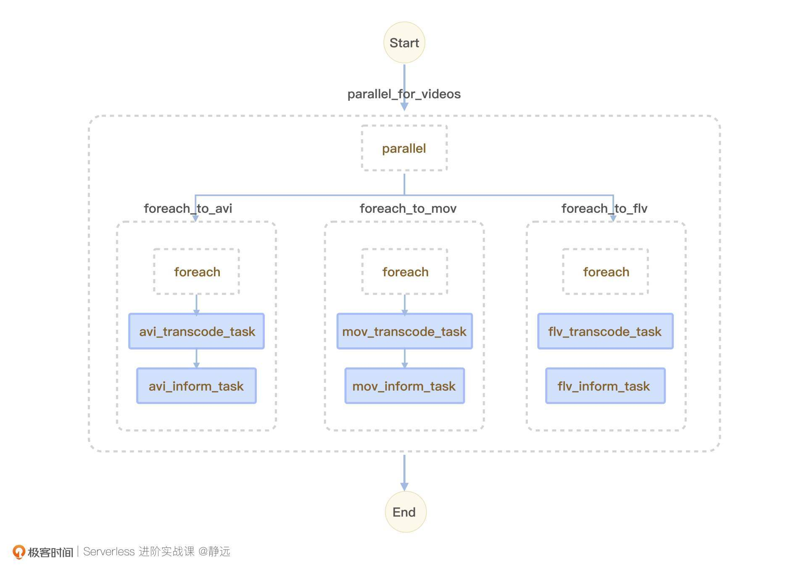
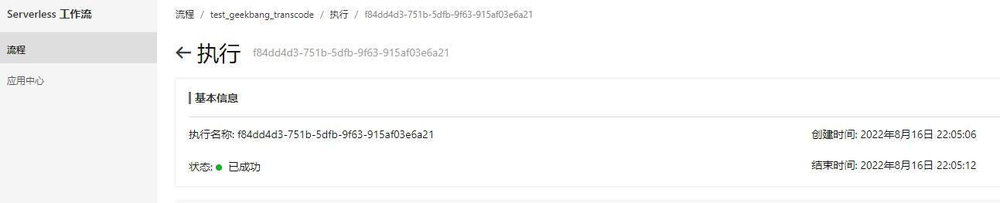
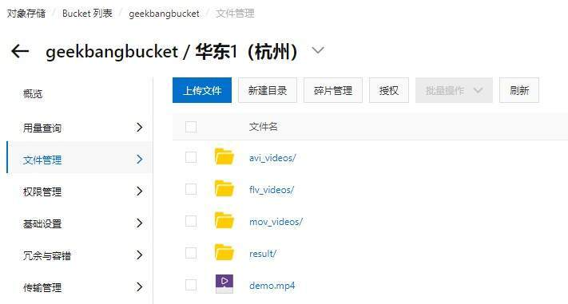

- 00 开篇词 Serverless是降本增效浪潮下的必然选择.md.html
- 00 思维构建 如何在新赛道下进阶Serverless能力？.md.html
- 01 生命周期：函数计算的基本流程是如何执行的？.md.html
- 02 触发器：如何构建事件源与函数计算的纽带？.md.html
- 03 高级属性：应对生产级别的应用，你需要掌握哪些技能？.md.html
- 04 冷启动：如何加快函数的第一次调用过程？.md.html
- 05 扩缩容：如何应对流量的波峰波谷？.md.html
- 06 流量转发：函数在不同情形下是如何执行的？.md.html
- 07 运行时（上）：不同语言形态下的函数在容器中是如何执行的？.md.html
- 08 运行时（下）：不同语言形态下的函数在容器中是如何执行的？.md.html
- 09 小试牛刀（一）：如何利用函数之间的调用解决业务问题？.md.html
- 10 小试牛刀（二）：如何突破VPC网络的速度限制？.md.html
- 11 WebIDE：如何让函数远离繁琐的本地开发模式？.md.html
- 12 编排：如何协调多任务的运行？.md.html
- 13 可观测（上）： 如何构建多维度视角下的Serverless监测体系？.md.html
- 14 可观测（下）： 如何构建多维度视角下的Serverless监测体系？.md.html
- 15 选型：不同阶段的数据应如何存储？.md.html
- 16 动手体验（一）：如何实现业务高效率地开发上线？.md.html
- 17 动手体验（二）：如何在云函数场景下实现一个有状态的服务？.md.html
- 18 实战指南：Serverless沙场老兵的一线使用经验.md.html
- 19 实战进阶（一）：Serverless “连接器” 的能力到底有多大？.md.html
- 20 实战进阶（二）：如何基于智能音箱开发一个BOT技能？.md.html
- 21 实战进阶（三）：传统的服务如何迁移到Serverless平台？.md.html
- 22 私有云：赛马时代的Serverless核心引擎谁能胜出？.md.html
- 23 实战进阶（四）：如何从0到1进阶一个开源引擎？.md.html
- 24 实战进阶（五）：如何从Serverless引擎蜕变成一个Serverless平台？.md.html
- 结束语 在实战中把握事物本质，不断革新.md.html
- 捐赠
16 动手体验（一）：如何实现业务高效率地开发上线？
你好，我是静远。
在前面的课程中，我不止一次提到，在Serverless的产品形态中，你只需要关注业务的逻辑，无需管理复杂的基础设施，可以快速地实现应用产品的交付和试错。
但如果你刚接触Serverless，使用起来应该会时常磕磕碰碰，主要体现在熟悉开发形式的转变、掌握对框架语法、理解对集成服务等多个方面，相信你在前面的学习和实践中也有过这样的感受。
其实，在Serverless的应用领域，已经有了不少常用场景的模板，来提升你使用的便捷度了。不知道你有没有用起来过呢？
今天，我将带你了解基于“模板”的理念，实现业务快速上线的方式。
希望通过这节课程，让你从实战层面体会到Serverless形态技术在“提质增效、快速交付”上面的优势。
Serverless的模板是什么？
当你在控制台或者开发工具选择使用模板后，通常会在WebIDE或者你的本地编辑器生成一段模板代码，然后你再根据实际的需要去更改模板中代码，最后再按照代码包的处理方式将这段更改后的模板打包上传，就完成了一个云函数的部署。
有的比较复杂一点的场景，会包含多个函数模板，组成一个应用级别的模板。而我们又可以通过编排多个函数进行，来满足我们在12课中提到的工作流场景，我们在课程中知道，工作流的核心之一是“编排结构”，这个JSON或者YAML结构可以沉淀为这一业务场景下的通用模板。
也就是说，Serverless下的模板，从单个函数模板到多个函数组成的应用模板，函数和应用编排下的工作流模板都存在，这些模板会给你带来快捷编码、连接上下游配置的能力。
下面我们一起来看看怎么把模版用起来吧。
基于函数模板的转码实战
在我们常见的业务中，会为了适配各种终端和网络条件，将原来的视频转码成各种格式。那么接下来，我就带着你利用函数模板，一起实现一个音视频转码的功能，加深对模板核心能力的体会。
搭建
我以阿里云函数计算FC作为本次练习的平台。
首先我们进入“应用中心”，点击“创建应用”，会看到很多的应用模板展示，这些模板是平台根据用户的使用经验来提供的，像函数计算常见的Web应用、文件处理、音视频转码等场景，你都可以在这里面找到。今天，我们选择“音视频处理”用例中的“音视频转码job”。
接着，我们点击“直接创建”，进入“创建应用”页面，填写设置“部署类型”“应用名称”“RAM角色”等，点击创建，就完成了一个音视频转码模板应用的构建。

接下来，应用会进行一系列资源的检查，如果你是第一次创建，还需要创建和绑定RAM角色，云厂商基本上都会有这一步的操作。
创建完成后，我们点击进入具体的应用详情页，你会发现音视频的应用包含了多个函数的组成，包括dest-fail、dest-succ、transcode三个函数。

相信你通过他们的函数名也能猜出具体功能，dest-fail和dest-succ分别对应了转码失败或成功的操作逻辑。比如转码失败的情况下，你可能需要添加一些通知操作，也可以根据实际的需求通过编码实现。
这个案例中的核心函数是音视频转码的模板函数transcode。它具体做了什么呢？我们来看下入口函数handler的实现：
def handler(event, context):
LOGGER.info(event)
evt = json.loads(event)
oss_bucket_name = evt["bucket"]
object_key = evt["object"]
output_dir = evt["output_dir"]
dst_format = evt['dst_format']
shortname, _ = get_fileNameExt(object_key)
creds = context.credentials
auth = oss2.StsAuth(creds.accessKeyId,
creds.accessKeySecret, creds.securityToken)
oss_client = oss2.Bucket(auth, 'oss-%s-internal.aliyuncs.com' %
context.region, oss_bucket_name)
# simplifiedmeta = oss_client.get_object_meta(object_key)
# size = float(simplifiedmeta.headers['Content-Length'])
# M_size = round(size / 1024.0 / 1024.0, 2)
input_path = oss_client.sign_url('GET', object_key, 6 * 3600)
# m3u8 特殊处理
rid = context.request_id
if dst_format == "m3u8":
return handle_m3u8(rid, oss_client, input_path, shortname, output_dir)
else:
return handle_common(rid, oss_client, input_path, shortname, output_dir, dst_format)
handler首先会从event中获取bucket、object、output_dir以及dst_format等几个字段，它们分别表示什么呢？
- bucket：视频所在对象存储的bucket名称；
- object：视频在对象存储中的objectName；
- output_dir：转码后的视频需要存放在对象存储中的路径；
- dst_format：需要转成的视频格式。
handler会根据认证信息创建OSS客户端对象、生成带签名的OSS文件的URL。
接着，根据转换格式对视频进行转换，如果目标格式是m3u8，就会进行特殊处理，否则函数会按照通用格式进行转码。
我们选择其中一个转码功能的代码分支handle_common，来看一下它的具体实现：
def handle_common(request_id, oss_client, input_path, shortname, output_dir, dst_format):
transcoded_filepath = os.path.join('/tmp', shortname + '.' + dst_format)
if os.path.exists(transcoded_filepath):
os.remove(transcoded_filepath)
cmd = ["ffmpeg", "-y", "-i", , transcoded_filepath]
try:
subprocess.run(
cmd, stdout=subprocess.PIPE, stderr=subprocess.PIPE, check=True)
oss_client.put_object_from_file(
os.path.join(output_dir, shortname + '.' + dst_format), transcoded_filepath)
except subprocess.CalledProcessError as exc:
# if transcode fail，trigger invoke dest-fail function
raise Exception(request_id +
" transcode failure, detail: " + str(exc))
finally:
if os.path.exists(transcoded_filepath):
os.remove(transcoded_filepath)
return {}
你会发现，其实在handle_common中，主要封装了ffmpeg，程序通过调用ffmpeg的执行转码命令转码音视频文件，最后将转码后的文件通过OSS的客户端写回到对象存储中。
到这里，我们就基于应用函数模板创建了一个音视频转码的“模子”，也理解了其中的实现机制。下面，我来带你配置特定的业务参数，让它能够执行起来，处理具体的业务。
执行
我们首先在函数计算的同地域，通过对象存储OSS建立一个bucket，然后上传一个视频到该bucket中。这个过程不难理解，你可以参考OSS的使用手册快速实现。
比如，我创建的bucket是“geekbangbucket”，上传的视频为“demo.mp4”。

然后，我们需要通过函数的测试事件来验证音视频的转码是否可以运行。在点击函数测试之前，我们还需要配置一些参数，以便transcode知道从哪里读取，转成什么格式的文件，输出到哪里：
{
"bucket": "geekbangbucket", // 你在OSS上创建的bucket名称
"object": "demo.mp4", // 你上传的音视频名称
"output_dir": "result", // 你希望将转码后的视频存储的目录
"dst_format" : "mov" // 你希望转码后的视频格式
}
这些参数，就是我们在搭建阶段分析的transcode的入参，它们会通过event对象传入。
最后，我们点击“测试函数”，在函数执行成功后，我们就可以去OSS上查看result目录下是否生成demo.mov了。

这样，我们就完成了一个具有视频转码功能的云函数的开发。你在实际的业务工作中，也可以通过设置OSS触发器的方式自动触发执行音视频转码函数。这样一遍操作下来，是不是比你平时的开发要高效多了呢？
音视频转码进阶
现在，我们已经能够满足一般的业务了，但有的时候，我们也需要同时实现多个音视频的转码。那么，如何基于上述函数模板的能力，快速实现并行的转码处理服务呢？
在开始之前，你可以先回想一下，在编排这节课，我们提到的工作流是不是正好可以解决这个场景？
整体设计
在编排小节中，我给你介绍过工作流的并行步骤，它包含了多个分支，在运行时，这些分支会并行执行。你可以将每一个格式的转码任务对应一个并行分支，然后通过工作流提供的输入映射，将目标格式传入到转换任务中。
考虑到视频转码任务在实际的业务处理中会批量地运行，你还可以使用循环的能力来处理。
结合这个思路，我给你提供了一张工作流的执行示意图，让你理解得更加清晰一些：

这里，我为了使模拟的转码场景更贴近真实业务，假设的是需要转码成avi、mov、flv三种格式，并在转码任务之后添加了一个子任务，通过它通知对应的平台或者播放终端。因此，你看到的子任务中包含了两个task，一个是转码任务，另一个是转码后的收尾任务。
具体实现
虽然每个分支对应了一种格式的转换任务，但实际上在你前面实现的函数中，也可以通过传参的方式控制不同格式的转换。所以，这些分支中的task 都可以使用你前面构建的云函数来完成。
我以avi为例做个演示。
正如整体设计中所说的，我们首先需要定义一个parallel步骤，来控制多个并行任务的处理，在我的yaml中，对应的是parallel_for_videos。
steps:
- type: parallel
name: parallel_for_videos
branches:
接下来，我们可以在branches下配置并行的分支任务。由于我们这边设置的是循环foreach步骤，所以在yaml中创建的是循环foreach_to_avi，如下所示：
- steps:
- type: foreach
name: foreach_to_avi
iterationMapping:
collection: $.videos
item: video
inputMappings:
- target: videos
source: $input.videos
需要注意的是，foreach步骤中需要你定义好迭代的变量，即yaml中的iterationMapping，后续的子步骤也会用item定义字段作为输入变量（也就是video）。我这里的输入是将待转码信息定义在videos数组中，你也可以按照自己喜欢的方式定义。
接下来，我们再来定义子步骤。子步骤包含转码和通知两个task，我们先看转码任务。转码任务需要用到你前面创建的音视频转码函数，也就是resourceArn字段（如果你不记得它的使用，可以用工作流定义语言任务步骤）。
另外在工作流中，因为是通过inputMappings来定义函数的传参，因此，输入就需要和函数中定义的事件字段保持一致了。可以看到，我这里仍然需要传dst_format、output_dir、bucket、object这几个参数。下面是转码任务的task，我定义为avi_transcode_task。
steps:
- type: task
name: avi_transcode_task
resourceArn: acs:fc:*******:services/VideoTranscoder-t6su/functions/transcode
inputMappings:
- target: dst_format
source: avi
- target: output_dir
source: avi_videos
- target: bucket
source: $input.video.bucket
- target: object
source: $input.video.object
完成转码task的定义后，我们继续定义另一个task任务，我这里定义为avi_inform_task。
- type: task
name: avi_inform_task
resourceArn: acs:fc:*******:services/VideoTranscoder-54jr.LATEST/functions/dest-succ
inputMappings:
- target: platform
source: avi_platform
这样我们就完成了一个分支的定义。这里，我也列出了完整的yaml分支给你参考，相信接下来，你也可以举一反三地实现另外两个分支的yaml定义了。
- steps:
- type: foreach
name: foreach_to_avi
iterationMapping:
collection: $.videos
item: video
inputMappings:
- target: videos
source: $input.videos
steps:
- type: task
name: avi_transcode_task
resourceArn: acs:fc:cn-hangzhou:*******:services/VideoTranscoder-54jr.LATEST/functions/transcode
inputMappings:
- target: dst_format
source: avi
- target: output_dir
source: avi_videos
- target: bucket
source: $input.video.bucket
- target: object
source: $input.video.object
- type: task
name: avi_inform_task
resourceArn: acs:fc:cn-hangzhou:*******:services/VideoTranscoder-54jr.LATEST/functions/dest-succ
inputMappings:
- target: platform
source: avi_platform
定义完工作流的yaml后，我们来验证一下，这时还需要配置一下工作流的测试参数，才能点击执行。
我的输入还是使用的前面用到的视频demo，因为我们在工作流中的每个分支定义好了output_dir和dst_format，因此这两个参数并不需要传入。而前面我也说过foreach的输入需要定义在videos这个数组中，所以，我的输入如下：
{
"videos": [
{"bucket": "geekbangbucket","object": "demo.mp4"}
]
}
然后我们点击执行，可以在状态栏下看到执行成功的反馈了。

最后，我们还可以到OSS中检查一下看看是否转码成功。如果转码成功，你一定可以在OSS中看到分别生成的三个不同的目标目录。

你可以结合实际业务场景，选择通过API或者定时调度的方式来启动工作流。这样，一个具备多种格式并行转码功能的工作流就完成了。
此时，你可以将YAML文件保存下来，共享给你的其他同学，他只需要改动几个参数，比如resourceARN、自己的入口Bucket等变量，就可以实现跟你一样的函数编排功能了。
这种保存下来的YAML文件同样可以作为模板存在。而我们有的云厂商为了提升开发者的效率，也在函数编排的产品化中实现了这样的模板能力。
小结
最后，我来小结一下我们今天的内容。今天我跟你从如何实现业务高效率地开发上线的视角，以Serverless下的模板为基石，和你一起体验了一把Serverless“提质增效、快速交付”的优势。
对于一个刚步入Serverless领域的新手来说，使用模板来构建自身的业务应用，无疑是一个捷径。我们可以根据业务的复杂程度来选择使用单函数的模板，还是结合多个函数应用形态的模板。
面对更复杂的场景，我们还可以发挥工作流编排的优势，将函数与其他的云服务（如文件存储、对象存储、日志服务）结合起来，迅速地完成一个复杂应用系统的搭建。
更进一步的，我们还可以将这样的编排YAML文件沉淀下来，供身边的同学使用，让模版的能力得到真正的体现。
课后作业
好了，这节课到这里也就结束了，最后我给你留了一个延伸作业。
这节课，我们一直是通过主动调用的方式进行实验，那通过触发器的方式能不能实现呢？快动动你的小手试试吧。
欢迎在留言区写下你的思考和答案，我们一起交流讨论。
感谢你的阅读，也欢迎你把这节课分享给更多的朋友一起交流学习。
© 2019 - 2023 Liangliang Lee. Powered by gin and hexo-theme-book.